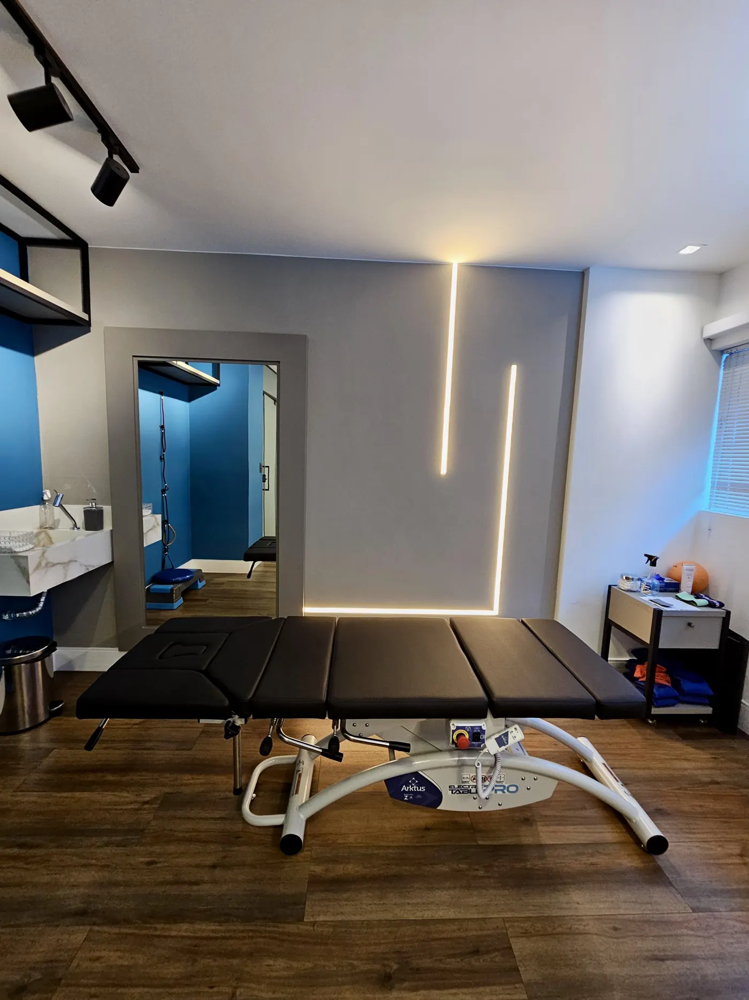
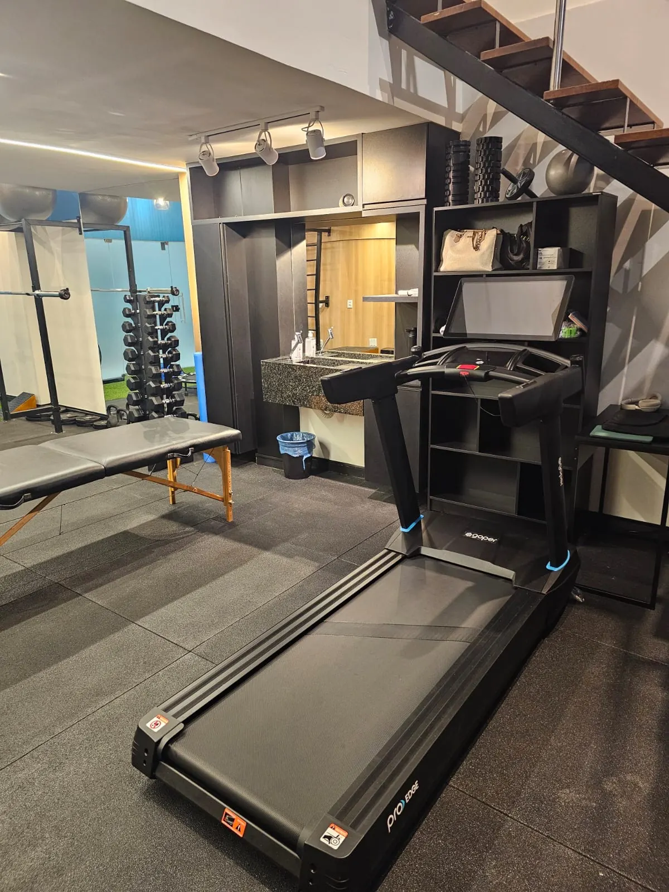
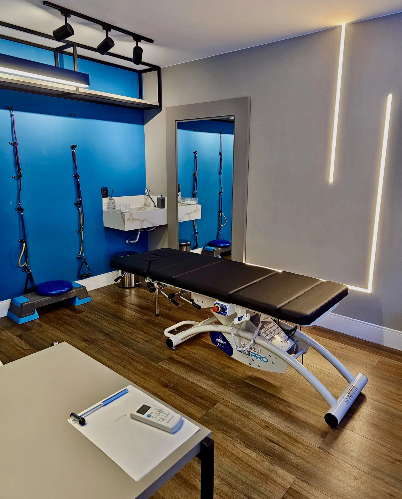

Página não encontrada
O endereço que você abriu não existe mais. Veja abaixo os nossos tratamentos.
Qual barreira você quer vencer hoje?
Coluna, hérnia de disco e dores persistentes
Investigação precisa e plano sob medida para lombar, ciática, cervical, ombro, joelho, ATM e fascite plantar.
Ver tratamentoPré e pós‑operatório ortopédico
Acompanhamento fase a fase para próteses, LCA, menisco, ombro, coluna e fraturas, do primeiro dia à retomada da rotina.
Ver tratamentoFisioterapia esportiva
Reabilitação de lesões, prevenção e retorno ao treino com leitura objetiva de força.
Ver tratamentoFisioterapia individual em Lagoa Nova
A Vértice é uma clínica de fisioterapia em Natal, no bairro Lagoa Nova, fundada pelo fisioterapeuta Pedro Castro. Cada paciente passa por uma avaliação individual e recebe um plano de tratamento com metas claras e reavaliações ao longo do caminho.
Nosso foco é a fisioterapia ortopédica e esportiva e o tratamento não farmacológico da dor, com terapia manual, exercícios e recursos como osteopatia, quiropraxia e laserterapia.

Técnicas e recursos
Nosso espaço
Salas climatizadas, área de treino funcional e equipamentos para avaliação e reabilitação.




O que nossos pacientes dizem
Atendimento sensacional! Cheguei com dores no quadril que estavam me impedindo de treinar direito e depois de uma avaliação e as sessões de fisio especificas para o meu problema estou 100% sem dor e voltei a treinar normalmente!
Excelente profissional! Me surpreendi positivamente porque já havia tido algumas experiências com outros profissionais da área, e foram frustrantes. Porém, com o Dr. Pedro, fui bem atendida, instruída e tratada, tanto que, em poucas sessões, estava curada das minhas dores no joelho e na cervical! Recomendo demais!
Minha mãe sofria de dores agudas nos joelhos, e depois que ela começou a se tratar com Dr. Pedro Castro, ela melhorou consideravelmente, e está andando. Vejo a felicidade no rosto dela e hoje já mexeu nas plantas. Muito obrigado por trazer vida à minha mãe. Excelente profissional e muito simpático.
Pedro foi importante no meu processo de recuperação da dor lombar e músculo do adutor, proveniente de vícios de postura e corrida. Com um método objetivo e orientando, através de exercícios dirigidos e com um bom relacionamento fisioterapeuta paciente, consegui não só melhorar das dores como incorporei os exercícios a minha prática diária.
Cheguei ao Dr Pedro Castro com fortes dores no joelho, insegurança para fazer movimentos laterais e rotacionais, agachar e levantar. O quadro era de lesão de ligamento cruzado anterior e condropatia patelar + tendinite. Hoje saiu com uma felicidade imensa por não sentir mais dores e recuperar a confiança no meu joelho direito. Trabalhou não somente o joelho doente, mas os dois joelhos, pernas e quadril, e me proporcionou uma melhora extraordinária. Atendimento excelente, humano, atencioso, educado. Super indico.
Após o contágio com o COVID evolui com um quadro de dor complexa, refratária a muitos tipos de tratamento, e sem acreditar mais na possibilidade de uma ajuda real, eu fui ao Dr Pedro, que foi muito empático com o meu quadro global, quando fui a ele estava sem praticar atividades físicas por medo da dor, e tinha dores intensas só de caminhar por alguns períodos, após alguns anos de cuidado e persistência pude retornar as atividades físicas e ontem fiz minha primeira corrida de 10km! Muito feliz e grata a Deus por esse profissional incrível
Encontrei Pedro em um momento tenso da minha gestação. Dores de cabeça fortes e constantes. As sessões de fisioterapia com certeza foram aliadas na melhora significativa que tive. Dores diminuíram, parei de tomar os analgésicos e passei a não ter mais crises. Pedro teve sensibilidade em todo o processo em me ouvir. A sessão é milagrosa, a dor nos pontos antes existente, somem após as manipulações e exercícios. Indico demais!
Não deixe para depois o movimento que você pode recuperar agora.
Marque sua avaliação em Lagoa Nova e entenda o caminho mais seguro para o seu corpo.